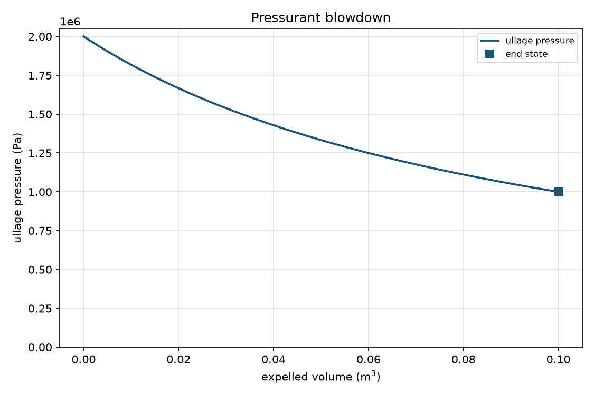
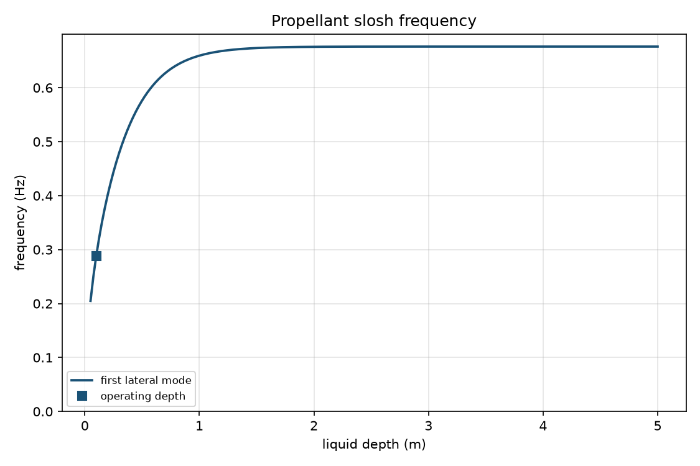
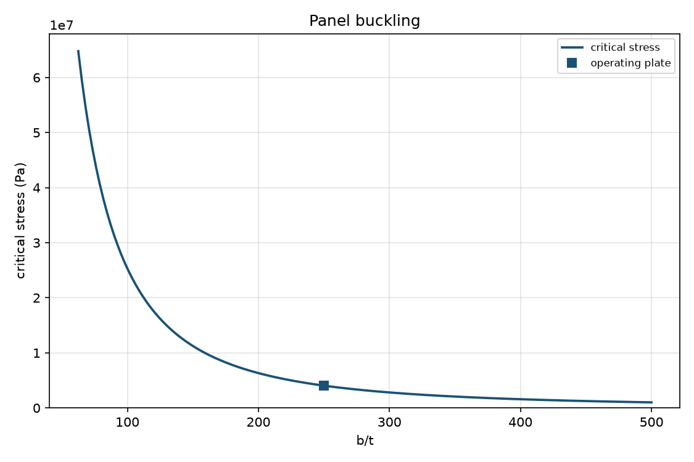
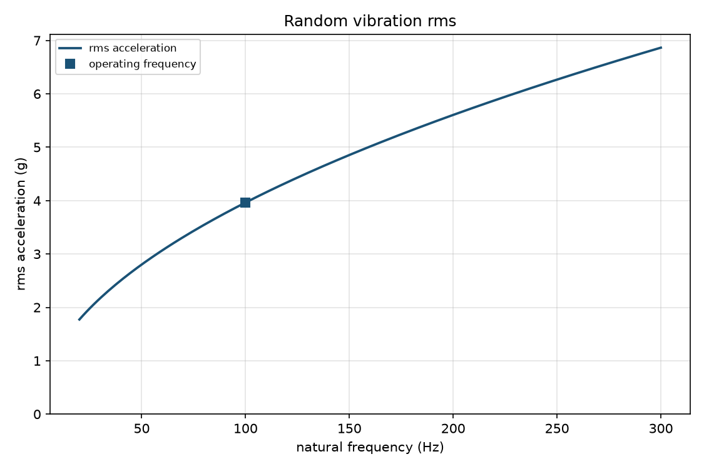
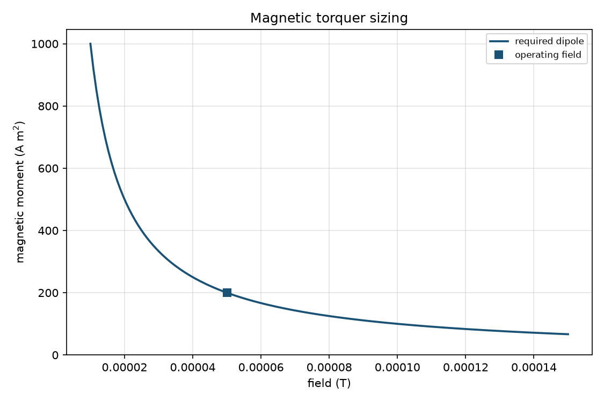
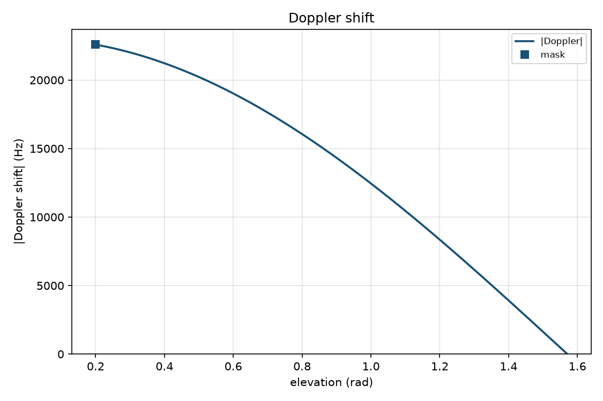
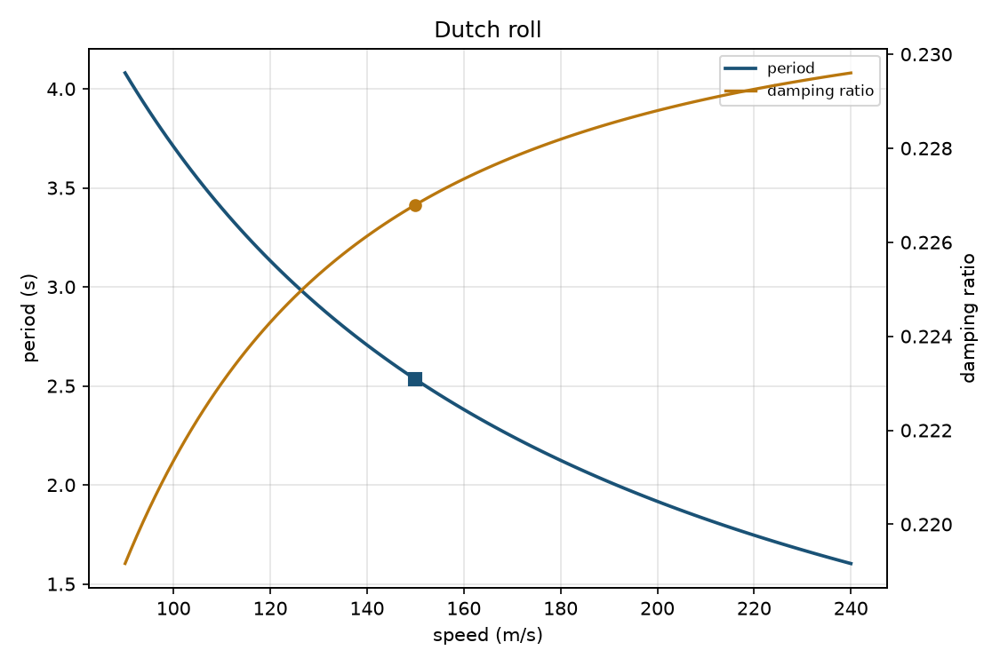
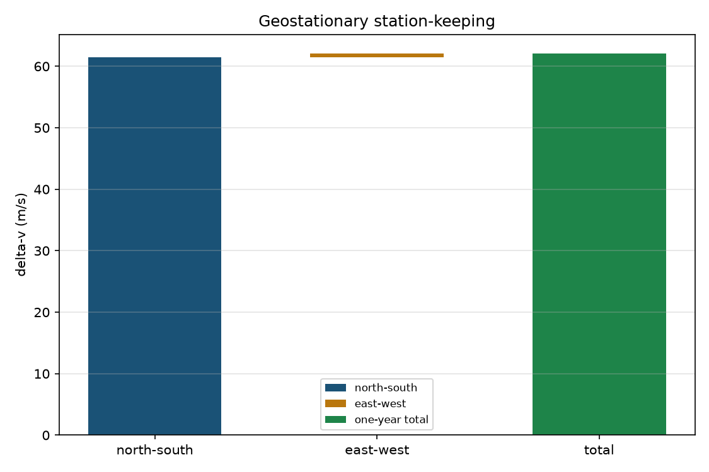
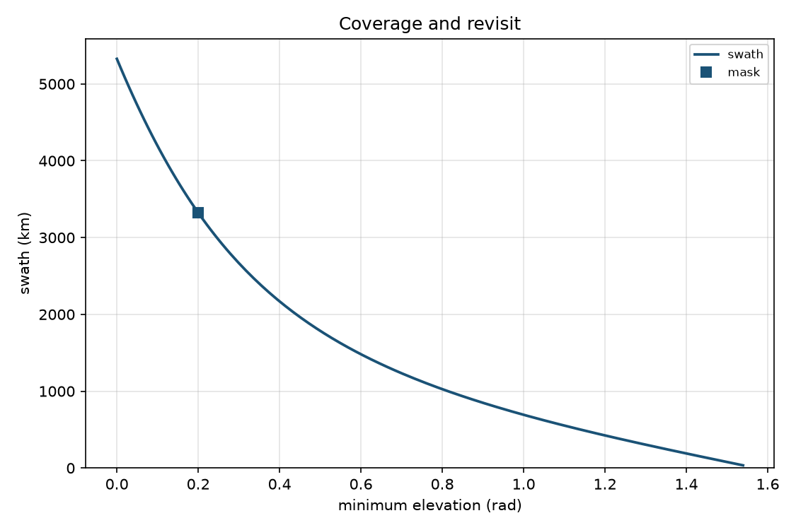
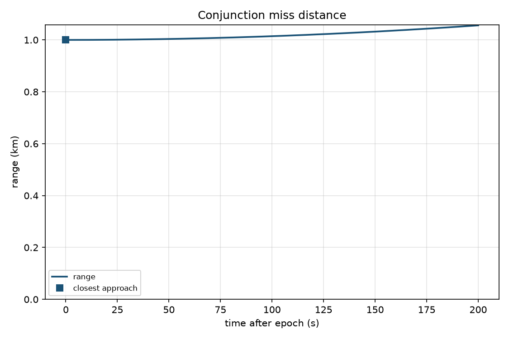

Figures from the ten skill checks
Each image is the PNG that skill wrote for its built-in check case. The files are in this folder.
Pressurant blowdown — 2 MPa, ullage 0.1 m³, 0.1 m³ expelled, isothermal.
Propellant slosh — 1 m radius, 0.1 m fill.
Panel buckling — 70 GPa, width 0.5 m, thickness 2 mm, length 1.5 m.
Miles rms — 100 Hz, 0.01 g²/Hz, zeta 0.05.
Magnetic torquer — 0.01 N·m, 50 µT.
Doppler — 1 GHz, 600 km, elevation mask 0.2 rad.
Dutch roll — 150 m/s sample case.
Geostationary station-keeping — one year of the check drifts.
Coverage — 600 km, elevation mask 0.2 rad.
Conjunction — 1 km radial offset, 200 s window.